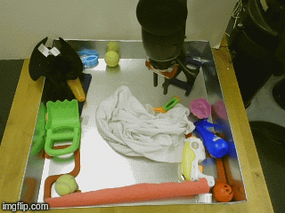
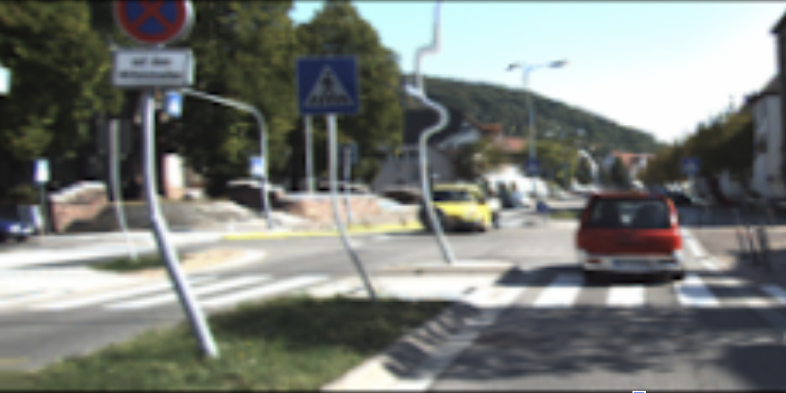

|
I am a PhD Student in the GRASP lab at University of Pennsylvania advised by Dr. Kostas Daniilidis. My research interests broadly lie in developing meaningful representations of sensory data in robotic systems for intelligent autonomous decision making. My current work focuses on neuromorphic approaches to perceptual decision making. Prior to starting my PhD, I was a Senior Software Engineer at Lockheed Martin Corporation where I worked from 2014 to 2019. I received an M.A. in Mathematics, M.A. in Economics, and B.S. in Mathematics and Economics from The University of Alabama in 2014. Email / CV / Biography / Google Scholar / LinkedIn |
{kind=link}
|  |
Sudeep Dasari, Frederik Ebert, Stephen Tian, Suraj Nair, Bernadette Bucher, Karl Schmeckpeper, Siddharth Singh, Sergey Levine, Chelsea Finn Conference on Robot Learning (CoRL), 2019 arXiv / project page / code / bibtex We developed a dataset of over 15 million video frames of 7 different robots at 113 different camera viewpoints interacting with objects. We use our new dataset to test the generalization capability of state-of-the-art video prediction algorithms. |

|
Bernadette Bucher, Anton Arapin, Ramanan Sekar, Feifei Duan, Marc Badger, Kostas Daniilidis, Oleh Rybkin RSS Workshop on Combining Learning and Reasoning Towards Human-Level Robot Intelligence, 2019 bibtex We model scene dynamics with a conditional variational autoencoder from which we compute an intrinsic reward for curiosity for use in a reinforcement learning algorithm. |
|  |
Kenneth Chaney*, Bernadette Bucher*, Evangelos Chatzipantazis, Jianbo Shi, Kostas Daniilidis CVPR Workshop on 3D Scene Understanding for Vision, Graphics, and Robotics, 2019 bibtex We demonstrate a novel method for learning distinct latent representations of structural and semantic information from single monocular images which we use for novel viewpoint synthesis. |
|
|